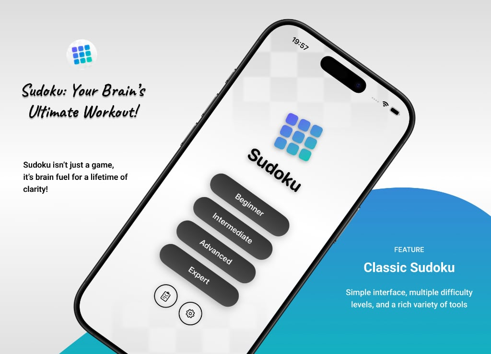
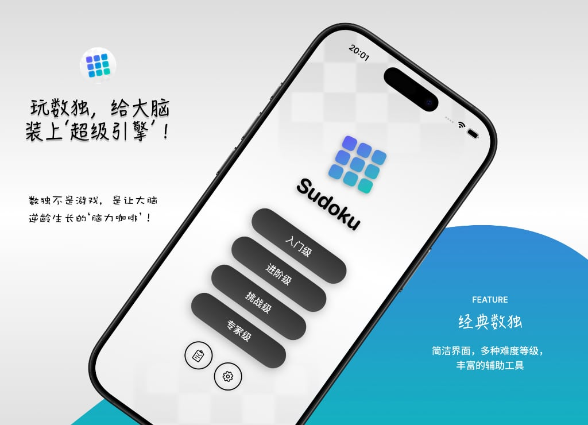

Sudoku
Your Brain’s Ultimate Workout!
Logic Boost: Solve puzzles like a detective—turn numbers into a mental gym!
Focus Power: Dive deep, block distractions, and lock your attention on the prize!
Memory Master: Track patterns, store clues—your hippocampus will thank you!
Age-Defying: A daily dose keeps your brain young, sharp, and lightning-fast at 60!
— Sudoku isn’t just a game—it’s brain fuel for a lifetime of clarity!
Classic Sudoku, reimagined. Whether you’re a beginner or an expert, you’ll enjoy the pure joy of logic and focus.
Key Features
Three input modes: Number mode, Manual Notes mode, Auto Notes mode (Pro)
Smart assistance: Hints, Auto‑Fill, Clear All Notes
Real‑time conflict detection: automatically highlights duplicate numbers in rows, columns, and boxes
Undo & Redo: experiment without fear, worry‑free operation
Dark Mode: comfortable for both day and night
Statistics
Detailed stats page: total completions, time distribution, time spent per difficulty, mistake statistics, etc.
Personal bests: fastest completion time, average mistakes, etc.
Charts: completion rate and time distribution at a glance
Fun Brain Scores
After each game, we generate playful brain scores based on difficulty, time, mistakes, and hints used:
Brain Boost (%)
Brain Calories burned
IQ Change
Dementia Risk
Brain Cell Activity (%)
For entertainment only – a little smile for your mental effort.
Free vs Premium
The free version gives unlimited access to all difficulties (Beginner to Expert), but hint and auto‑fill helpers have daily usage limits, and Auto Notes as well as undo/redo are not included. Full statistics are also limited.
The Premium Edition unlocks unlimited hints, unlimited auto‑fill, unlimited undo/redo, Auto Notes that update candidates in real time, complete statistical charts, and removes all ads. One‑time purchase, enjoy forever.
The Impact of Sudoku on Your Brain
Short‑term cognitive improvements
Enhanced logical reasoning: The core of Sudoku is logical deduction – using elimination, hypothesis testing, and strategies to fill the grid. This training significantly improves your brain’s ability to analyze logic, quickly identify patterns, and solve complex problems.
Improved focus and concentration: Solving Sudoku requires high concentration, avoiding distractions. Long‑term practice can extend your attention span and boost multitasking ability, positively affecting tasks that require sustained focus (e.g., studying, working).
Strengthened working memory: Sudoku demands that you keep multiple numbers and possibilities in your mind at once, which exercises your working memory (the ability to process information in short‑term memory). This helps improve learning efficiency and information processing speed.
Long‑term brain health maintenance
Prevention of cognitive decline: Studies show that regular mental activities like Sudoku can reduce the risk of dementia (e.g., Alzheimer’s disease). Such activities stimulate neural connections, delay atrophy in key regions like the hippocampus, and maintain cognitive function.
Promotion of neuroplasticity: Sudoku requires cooperation among different brain regions (prefrontal cortex, parietal lobes, etc.). Long‑term practice enhances connectivity between these areas, improving brain flexibility and adaptability, and may even promote the generation of new neurons.
Download now and start your logic challenge. One puzzle a day keeps your brain sharp and bright.


If you have any questions, please feel free to contact us at any time.
Sudoku 数独
玩数独，给大脑装上‘超级引擎’！
逻辑力：像侦探破案一样抽丝剥茧，数字谜题秒变思维健身房！
专注力：沉浸式解谜，屏蔽干扰，让你的注意力“钉”在目标上！
记忆力：数字位置、推理路径全记牢，大脑海马体疯狂“存盘”！
抗衰老：每天一局，给大脑做“瑜伽”，60岁也能思维如闪电！
—— 数独不是游戏，是让大脑逆龄生长的‘脑力咖啡’！
经典数独，全新体验。无论您是新手还是高手，都能在这里享受逻辑与专注的乐趣。
核心功能
三种输入模式：数字模式、手动笔记模式、自动笔记模式（高级版）
智能辅助：提示、自动填充、一键清空笔记
实时冲突检测：自动高亮行、列、宫中的重复数字
撤销与重做：放心尝试，操作无忧
深色模式：白天黑夜，舒适护眼
数据统计
详细统计页面：总完成次数、时间分布、各难度耗时、错误统计等
个人最佳记录：最快完成时间、平均错误等
图表展示：破解率、时间分布一目了然
趣味脑力指数
每局结束后，根据难度、时间、错误和提示次数，生成有趣的脑力指数：
脑力提升百分比
消耗脑卡路里
智商变化
痴呆风险
脑细胞活跃度百分比
纯属娱乐，给您会心一笑。
免费版与高级版
免费版可无限游玩所有难度（初级到专家），但提示、自动填充等辅助功能每日有次数限制，且不含自动笔记和撤销/重做，完整统计数据受限。
高级版解锁无限提示、无限自动填充、无限撤销/重做、自动笔记实时更新候选数、完整统计图表，无任何广告。一次购买，永久享用。
数独对大脑的影响
短期认知功能提升
逻辑推理能力增强：数独的核心是逻辑推理，玩家需通过排除法、假设验证等策略逐步填充数字。这种训练能显著提高大脑的逻辑分析能力，帮助快速识别规律、解决复杂问题。
专注力与注意力集中：完成数独需要高度集中注意力，避免被干扰或分心。长期练习可延长专注时间，提升多任务处理能力，尤其对需要持续注意力的任务（如学习、工作）有积极影响。
工作记忆强化：数独要求玩家在脑海中同时记住多个数字的位置和可能性，这能锻炼工作记忆（短期记忆中处理信息的能力），有助于提高学习效率和信息处理速度。
问题解决能力提升：面对数独中的“死局”时，玩家需尝试多种方法并灵活调整策略。这种训练能培养创造性思维和应对挫折的能力，增强解决实际问题的信心。
长期大脑健康维护
预防认知衰退：研究表明，经常进行数独等脑力活动可降低老年痴呆症（如阿尔茨海默病）的风险。这类活动能刺激大脑神经连接，延缓海马体等关键区域的萎缩，保持认知功能。
促进神经可塑性：数独需要大脑不同区域（如前额叶、顶叶）协同工作，长期练习可增强这些区域的连接，提升大脑的灵活性和适应性，甚至可能促进新神经元的生成。
情绪调节与压力缓解：完成数独时的“心流体验”（专注带来的愉悦感）能降低皮质醇水平，缓解焦虑和压力。同时，解决难题的成就感可提升自信心和情绪稳定性。
立即下载，开始您的逻辑挑战。每天一局，越玩越聪明。

任何问题，欢迎随时与我们联系。